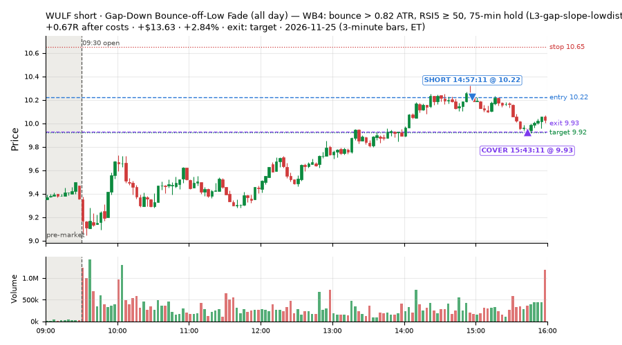
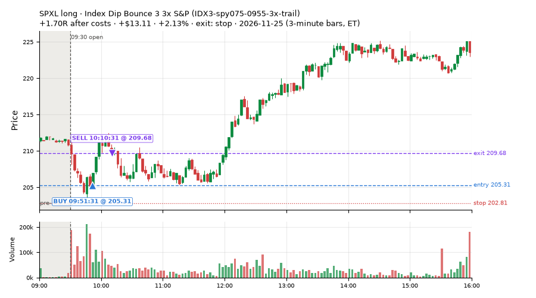
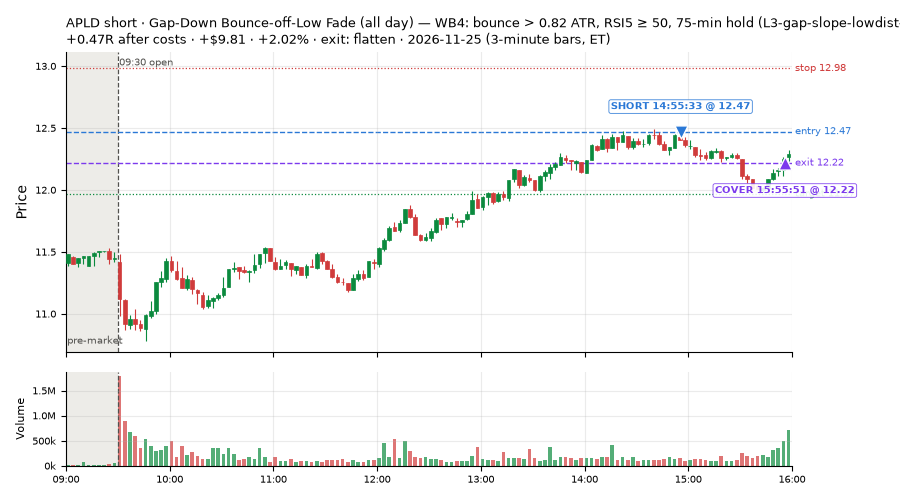
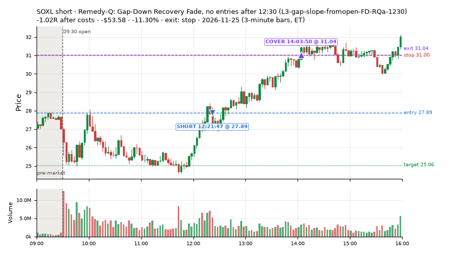
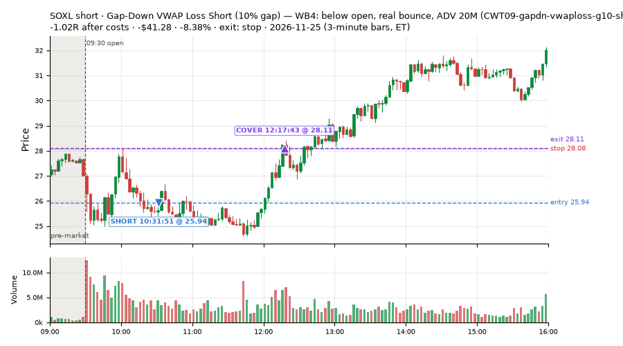
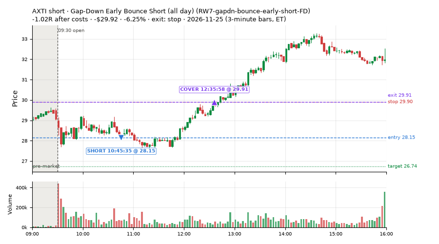
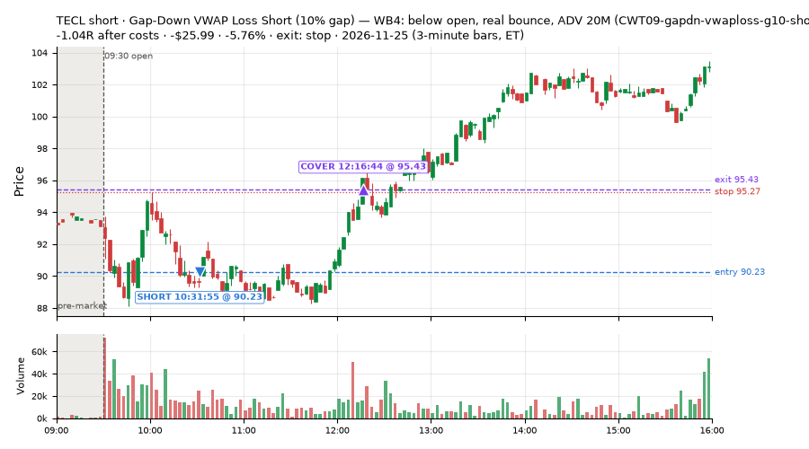
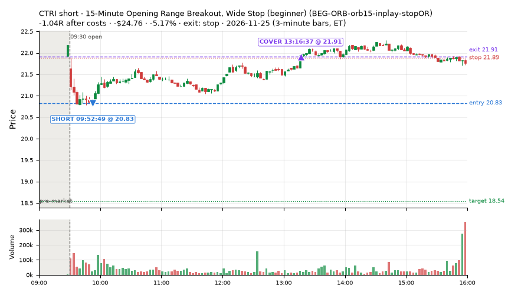

404 trades · win rate 25% · P/L $-2,474.69
PROBATION: no live setup has passed both locked test periods. 10 owner-directed setups added 2026-10-08 (MarcoFlow top 5 + 5 new), untested live. RW6G1 (RW6 + VWAP band guard) added 2026-10-09, probation.

| Symbol | Setup | Side | In | Out | Entry | Exit | Exit reason | % gained | P/L |
|---|---|---|---|---|---|---|---|---|---|
| WULF | Gap-Down Bounce-off-Low Fade (all day) — WB4: bounce > 0.82 ATR, RSI5 ≥ 50, 75-min hold (L3-gap-slope-lowdist-FD-WB4) | short | 14:57 | 15:43 | 10.22 | 9.93 | target | +2.84% | $13.63 |
| SPXL | Index Dip Bounce 3 3x S&P (IDX3-spy075-0955-3x-trail) | long | 09:51 | 10:10 | 205.31 | 209.68 | stop | +2.13% | $13.11 |
| APLD | Gap-Down Bounce-off-Low Fade (all day) — WB4: bounce > 0.82 ATR, RSI5 ≥ 50, 75-min hold (L3-gap-slope-lowdist-FD-WB4) | short | 14:55 | 15:55 | 12.47 | 12.22 | flatten | +2.02% | $9.81 |
| Symbol | Setup | Side | In | Out | Entry | Exit | Exit reason | % lost | P/L |
|---|---|---|---|---|---|---|---|---|---|
| SOXL | L3-gap-slope-fromopen-FD-RQa-1230 | short | 12:21 | 14:03 | 27.89 | 31.04 | stop | -11.30% | $-53.58 |
| SOXL | CWT09-gapdn-vwaploss-g10-short-WB4 | short | 10:31 | 12:17 | 25.94 | 28.11 | stop | -8.38% | $-41.28 |
| AXTI | RW7-gapdn-bounce-early-short-FD | short | 10:45 | 12:35 | 28.15 | 29.91 | stop | -6.25% | $-29.92 |
| TECL | CWT09-gapdn-vwaploss-g10-short-WB4 | short | 10:31 | 12:16 | 90.23 | 95.43 | stop | -5.76% | $-25.99 |
| CTRI | BEG-ORB-orb15-inplay-stopOR | short | 09:52 | 13:16 | 20.83 | 21.91 | stop | -5.17% | $-24.76 |








Signal to fill: median 2s, 90th percentile 3s (404 trades). Bars close each minute; the order follows the bar close.
Best excursion (MFE): median 0.25R; worst (MAE) median 1.01R. 50% of trades never got +0.25R in our favour; 3 reached +1R and still closed at or below 0.
| Symbol | Setup | Best R | Worst R | Closed R |
|---|---|---|---|---|
| SNOW | MF1-945-flowsell-vwapup | +3.31 | -1.26 | -1.24 |
| EGO | L3-gap-slope-fromopen-FD-RQa-1230 | +1.07 | -1.26 | -1.18 |
| GFS | RW7-gapdn-bounce-early-short-FD | +1.07 | -1.04 | -1.12 |
| FXL | L3-gap-slope-lowdist-FD-WB4 | +0.32 | -1.43 | -1.63 |
| WCLD | L3-gap-slope-lowdist-FD-WB4 | +0.77 | -1.04 | -1.16 |
| Entry time | Trades | Win | Avg R | P/L |
|---|---|---|---|---|
| 09:50-10:30 | 18 | 83% | +0.11 | $8.79 |
| 10:30-11:30 | 82 | 43% | -0.54 | $-599.47 |
| 11:30-13:00 | 167 | 7% | -1.01 | $-1,576.20 |
| 13:00-14:00 | 92 | 7% | -0.61 | $-378.49 |
| 14:00-16:00 | 45 | 73% | +0.11 | $70.68 |
| Setup | Trades | Win | Avg R after costs | Adj R (net of SPY) | Avg R ex-market (all sessions) | P/L |
|---|---|---|---|---|---|---|
| 15-Minute Opening Range Breakout, Wide Stop (beginner) (BEG-ORB-orb15-inplay-stopOR) | 1.0 | 0% | -1.04 | -0.59 | – | $-24.76 |
| Gap-Down VWAP Loss Short (10% gap) — WB4: below open, real bounce, ADV 20M (CWT09-gapdn-vwaploss-g10-short-WB4) | 3.0 | 0% | -1.03 | -0.79 | – | $-90.23 |
| Failed Prior-Day-Low Break Long (0.1 ATR, low vol) — WB3: stop 0.45 ATR + gap-down >= 0.5% (CWT14-failbrk-pdl-p10-lowvol-long-WB3) | 63.0 | 100% | +0.20 | +0.04 | -0.04 (beta +0.49, n 170) | $117.97 |
| Index Dip Bounce 3 3x S&P (IDX3-spy075-0955-3x-trail) | 1.0 | 100% | +1.70 | +1.20 | – | $13.11 |
| Remedy-Q: Gap-Down Recovery Fade, no entries after 12:30 (L3-gap-slope-fromopen-FD-RQa-1230) | 87.0 | 1% | -1.07 | -0.71 | -1.00 (beta -0.06, n 97) | $-1,115.34 |
| Gap-Down Bounce-off-Low Fade (all day) — WB4: bounce > 0.82 ATR, RSI5 ≥ 50, 75-min hold (L3-gap-slope-lowdist-FD-WB4) | 194.0 | 16% | -0.64 | -0.42 | -0.32 (beta -1.09, n 198) | $-850.09 |
| Early Sellers Above VWAP (MF1-945-flowsell-vwapup) owner-directed; holdouts once: Sep-Oct +0.169R n86, Apr-Jun -0.050R n429 | 2.0 | 0% | -1.16 | -1.17 | +0.06 (beta -2.04, n 10) | $-13.91 |
| Quiet Downtrend Bounce Short (near-miss) (NM-AMS-N1-quiet-morning-short) | 1.0 | 100% | +0.27 | +0.24 | +0.30 (beta -0.02, n 7) | $6.16 |
| Gap-Down Early Bounce Short (all day) (RW7-gapdn-bounce-early-short-FD) | 52.0 | 6% | -1.01 | -0.43 | -0.13 (beta -0.72, n 467) | $-517.60 |
Market direction (SPY, beta 1) accounted for $-838.57 of today's $-2,474.69; the rest ($-1,636.12) came from the setups themselves. Avg R net of SPY: -0.42 (incl. a hedge leg's cost; report only).
21 setups live today. Today: 1326 signals, 404 taken, 23 lost because another setup held the symbol (2%). Since 2026-11-12 (10 sessions): 3402 signals, 1340 taken, 39 lost to other setups (1%). Peak open positions today 110 of 400 slots. Earnings blackout removed 116 symbols before scanning.
Simulated playing time (not live): 2056 what-if trades of signals not taken, avg -0.38R, 34% winners; of them 39 lost to another setup (avg -0.64R).
Silent: GEN-261029-05-BearDiv-RSI14ge78-Compress6le0p091-AM-BRopgt0p5-t05s05-long, GEN-261028-04-ORBfailUp-RSI14le22-Gaplem1p2-LATE-BRvwgt0p5-holdtr-long · Starved: MF1-945-flowsell-vwapup
| Prio | Setup | Today sig / taken | Sessions | Signals / taken / trades | Taken/day | Expected/day | Lost to other setups | Lost to (setup n) | Top skip reasons | SIMULATED: not-taken n / avg R / win | Verdict |
|---|---|---|---|---|---|---|---|---|---|---|---|
| 1 | Remedy-Q: Gap-Down Recovery Fade, no entries after 12:30 L3-gap-slope-fromopen-FD-RQa-1230 | 493 / 87 | 3 | 572 / 97 / 97 | 32.33 | – | 18 | L3-gap-slope-fromopen-FD-RQa-1230 18, L3-gap-slope-lowdist-FD-WB4 5 | spread / quote / size 206, other 162, not shortable / shorts off 89 | 474 / -0.95R / 6% | ok 161.7 entries/week |
| 2 | Gap-Down Bounce-off-Low Fade (all day) — WB4: bounce > 0.82 ATR, RSI5 ≥ 50, 75-min hold L3-gap-slope-lowdist-FD-WB4 | 610 / 194 | 7 | 685 / 198 / 198 | 28.29 | – | 1 | L3-gap-slope-fromopen-FD-RQa-1230 1 | other 160, spread / quote / size 154, not shortable / shorts off 143 | 486 / -0.59R / 21% | ok 141.4 entries/week |
| 3 | Failed Prior-Day-Low Break Long (0.1 ATR, low vol) — WB3: stop 0.45 ATR + gap-down >= 0.5% CWT14-failbrk-pdl-p10-lowvol-long-WB3 | 89 / 63 | 7 | 254 / 170 / 170 | 24.29 | – | 5 | L3-gap-slope-lowdist-FD-WB4 4, RW7-gapdn-bounce-early-short-FD 1 | spread / quote / size 61, other 18, symbol held by another setup 5 | 83 / -0.05R / 70% | ok 121.4 entries/week |
| 4 | Gap-Down VWAP Loss Short (10% gap) — WB4: below open, real bounce, ADV 20M CWT09-gapdn-vwaploss-g10-short-WB4 | 23 / 3 | 7 | 49 / 4 / 4 | 0.57 | – | 0 | – | not shortable / shorts off 44, spread / quote / size 1 | 45 / -0.68R / 2% | slow 2.9 entries/week; ~21 weeks to 60 trades |
| 5 | Index Dip Bounce 3 3x S&P IDX3-spy075-0955-3x-trail | 1 / 1 | 10 | 2 / 2 / 2 | 0.20 | – | 0 | – | – | 0 / – | slow 1.0 entries/week; ~60 weeks to 60 trades |
| 6 | * Oversold Slope Turn with Breadth Turning Up (near-miss) LD5-st2-breadthup-t05s1-long | 0 / 0 | 10 | 4 / 4 / 4 | 0.40 | – | 0 | – | – | 0 / – | slow 2.0 entries/week; ~30 weeks to 60 trades |
| 7 | Generated: Morning Overbought Coil Buy GEN-261029-05-BearDiv-RSI14ge78-Compress6le0p091-AM-BRopgt0p5-t05s05-long | 0 / 0 | 3 | 0 / 0 / 0 | 0.00 | – | 0 | – | – | 0 / – | silent no signals in 3 session(s); no expected rate on file |
| 8 | Generated: Late-AM Strong-Stock Dip Buy GEN-261021-05-RSIslopelem14-ORHdistge0p42-LAM-BRvwlt0p3-t1s05-long | 0 / 0 | 8 | 42 / 6 / 6 | 0.75 | – | 0 | – | other 25, spread / quote / size 11 | 36 / +0.32R / 56% | slow 3.8 entries/week; ~16 weeks to 60 trades |
| 9 | Quiet Downtrend Bounce Short (near-miss) NM-AMS-N1-quiet-morning-short | 6 / 1 | 10 | 17 / 7 / 7 | 0.70 | – | 0 | – | spread / quote / size 6, not shortable / shorts off 3, other 1 | 10 / +0.31R / 90% | slow 3.5 entries/week; ~17 weeks to 60 trades |
| 10 | Generated: Midday VWAP Loss Buy (fading) GEN-261020-06-VWAPxDn-Slope6lem0p011-BarsSinceHODge35-MID-BRoplt0p5-holdtr-long | 0 / 0 | 8 | 38 / 21 / 21 | 2.62 | – | 1 | RW7-gapdn-bounce-early-short-FD 1 | other 10, spread / quote / size 6, symbol held by another setup 1 | 17 / -0.73R / 12% | slow 13.1 entries/week; ~5 weeks to 60 trades |
| 11 | Generated: Lunch Trend Buy (MACD rising) GEN-261023-10-MACDhge0p12-VWAPcrossesle0-EMAdiffge0p16-LUNCH-BRvwlt0p4-hold-long | 0 / 0 | 8 | 17 / 9 / 9 | 1.12 | – | 1 | L3-gap-slope-fromopen-FD-RQa-1230 1 | other 6, symbol held by another setup 1, spread / quote / size 1 | 8 / +0.05R / 50% | slow 5.6 entries/week; ~11 weeks to 60 trades |
| 12 | Generated: Late New-High Short (QQQ down) GEN-261022-03-NewHOD-Ret15mATRge0p12-SMA20dge0p59-LATE-QQQdn-t05s1-short | 0 / 0 | 8 | 40 / 18 / 18 | 2.25 | – | 0 | – | not shortable / shorts off 11, spread / quote / size 6, other 5 | 22 / +0.20R / 77% | slow 11.2 entries/week; ~5 weeks to 60 trades |
| 13 | Generated: PM Prior-Low Bounce Short GEN-261022-10-EMAdChgge0p15-ORLdistge0p41-PDLdistle0p14-PM-BRoplt0p5-holdtr-short | 0 / 0 | 8 | 27 / 11 / 11 | 1.38 | – | 0 | – | not shortable / shorts off 10, spread / quote / size 5, other 1 | 16 / -0.17R / 56% | slow 6.9 entries/week; ~9 weeks to 60 trades |
| 14 | Generated: PM Buying-Surge Fade (extended) GEN-261019-10-FlowShiftge0p42-SMA50dge1p7-PM-BRoplt0p5-t1s1-short | 0 / 0 | 8 | 139 / 56 / 56 | 7.00 | – | 1 | GEN-261023-10-MACDhge0p12-VWAPcrossesle0-EMAdiffge0p16-LUNCH-BRvwlt0p4-hold-long 1 | not shortable / shorts off 52, spread / quote / size 15, other 14 | 82 / -0.19R / 43% | ok 35.0 entries/week |
| 15 | Early Sellers Above VWAP MF1-945-flowsell-vwapup | 12 / 2 | 10 | 87 / 10 / 10 | 1.00 | 5.33 | 0 | – | spread / quote / size 51, other 23, not shortable / shorts off 3 | 77 / +0.24R / 46% | starved 1.00 entries/day vs ~5.33 expected |
| 16 | Afternoon VWAP Reclaim Fade (all day) NS4-pm-vwap-reclaim-oversold-short-FD | 1 / 0 | 10 | 70 / 24 / 24 | 2.40 | 3.57 | 0 | – | other 22, spread / quote / size 15, not shortable / shorts off 9 | 46 / +0.08R / 52% | slow 12.0 entries/week; ~5 weeks to 60 trades |
| 17 | Gap-Down Early Bounce Short (all day) RW7-gapdn-bounce-early-short-FD | 84 / 52 | 8 | 855 / 467 / 467 | 58.38 | 59.92 | 11 | CWT14-failbrk-pdl-p10-lowvol-long-WB3 10, CWT05-flush-m05-v3-long 1 | spread / quote / size 154, other 126, per-setup cap 59 | 388 / -0.03R / 52% | ok 291.9 entries/week |
| 18 | Late Sharp Dip in an Uptrend, Long ULT-14-snap-long | 0 / 0 | 4 | 1 / 1 / 1 | 0.25 | – | 0 | – | – | 0 / – | slow 1.2 entries/week; ~48 weeks to 60 trades |
| 19 | Late Sharp Pop in a Downtrend, Short ULT-14-snap-short | 0 / 0 | 4 | 1 / 1 / 1 | 0.25 | – | 0 | – | – | 0 / – | slow 1.2 entries/week; ~48 weeks to 60 trades |
| 20 | Generated: Morning Breakdown Short (volatile) GEN-261022-07-Z12lem1p9-FlowShiftlem0p96-ATRdge3p6-AM-BRopgt0p5-t1s1-short | 0 / 0 | 4 | 22 / 6 / 6 | 1.50 | – | 0 | – | spread / quote / size 11, other 4, not shortable / shorts off 1 | 16 / -0.48R / 25% | slow 7.5 entries/week; ~8 weeks to 60 trades |
| 21 | 15-Minute Opening Range Breakout, Wide Stop (beginner) BEG-ORB-orb15-inplay-stopOR | 7 / 1 | 3 | 14 / 2 / 2 | 0.67 | – | 0 | – | trigger missed between polls 6, spread / quote / size 4, other 2 | 11 / -0.09R / 36% | slow 3.3 entries/week; ~18 weeks to 60 trades |
Every trade is attached as a CSV you can open and edit in Excel or Google Sheets. Live page: https://misiti15.github.io/MCF/live/